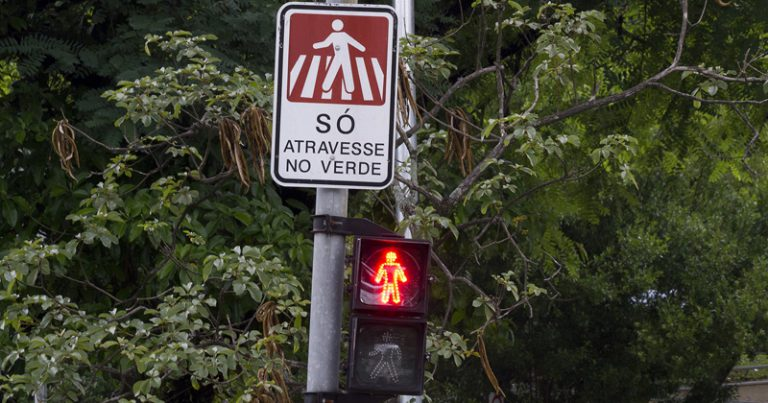

"98% dos idosos não conseguem atravessar a rua no tempo dos semáforos"
A pressa do trânsito urbano contrasta com um desafio diário enfrentado pela terceira idade: o tempo estipulado para a travessia de pedestres. Um dado preocupante aponta que 98% dos idosos não conseguem atravessar a rua antes que o sinal fique vermelho, expondo graves falhas de acessibilidade e acendendo o alerta para a urgência de adaptar a infraestrutura das cidades ao envelhecimento da população.